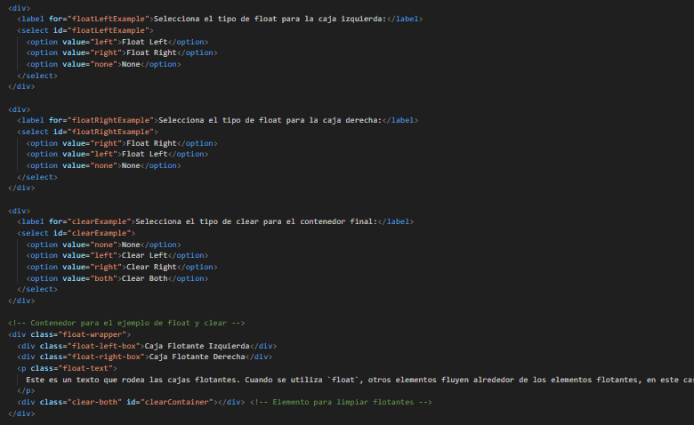

Esta propiedad se usa para alinear los elementos ya sea a la izquierda o a la derecha, estos deben estar
dentro de un contenedor, y permite que otros elementos se reacomoden al rededor de ellos, su principal funcion
es crear layouts de columnas, o tambien se usa para alinear imagenes con texto dentro de esos mismos contenedores
left: El elemento se desplaza hacia la izquierda y otros elementos fluyen a su derecha.
right: El elemento se desplaza hacia la derecha y otros elementos fluyen a su izquierda.
none: El elemento no flota y se comporta de acuerdo con el flujo normal de la página (valor predeterminado).
clear: Es comun itilizar esta propiedad, para evitar problemas de superposicion
con otros elementos, y esta toma los valores de left right o both para indicar la direccion donde no debe haber
objetos flotantes
Este es un texto que rodea las cajas flotantes. Cuando se utiliza `float`, otros elementos fluyen alrededor de los elementos flotantes, en este caso la caja izquierda y la caja derecha. La propiedad `float` permite crear layouts flexibles y, junto con `clear`, ayuda a evitar que el contenido se superponga.
El siguiente es el codigo del ejemplo en HTML, CSS y JavaScript, para float del ejemplo anterior
